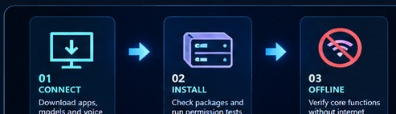

Visible head captures
Front, three-quarter and side compatibility-render screenshots have been reviewed; appearance and animation remain limited.
See actual images →Kira Labs / Technology Demonstrations
More than a technology historian. Evelyn is being developed as a continuing synthetic individual with her own interests, remembered experiences and evolving relationships. Conversation, reading and curiosity are intended to shape her identity over time.
In development · Free public demonstration planned
Development preview: Artwork is illustrative. There is no public installer or release date. An approved original greeting now exists. Live conversation using that voice, persistent visitor memory and natural full-body motion still require integrated verification. Release requirements →
Explore Evelyn's world
Seven illustrated areas of Evelyn’s development: her identity, conversations, books, virtual body, engineering progress and future local release. Choose any card to explore the complete research and its limits.
01Concept design
Meet Evelyn's authored background, curiosity and personality alongside her developing identity, relationships and separate memories.
View section02Software design
Spoken, private and factual channels; memory boundaries and the remaining live conversation tests.
View section03Prepared collection
Literature, biography and history. A library has been assembled; reading and learning remain unverified.
View section04Concept + real evidence
An illustrated body-development vision, alongside genuine head captures and tested eyelid movement.
View section05Dated research
Dated reports, scoped software checks, genuine results, identified failures and release gates.
View section
Planned · not released06Local-first goal
The planned installer, package checks, privacy controls and offline verification requirements.
View section07Pre-release support
Planned setup, reading support, troubleshooting, data recovery and future user documentation.
View sectionEvidence, not just illustrations
Front, three-quarter and side compatibility-render screenshots have been reviewed; appearance and animation remain limited.
See actual images →Left and right eyelids exceeded the fixed 65% closure requirement in a controlled test.
View recorded frames →Eight application checks and seven additional simulated conversation checks passed. They were not live conversations.
See test scope →These are different tests with different acceptance criteria. These particular tests do not establish a public installer, live dialogue, visitor-memory restart performance or natural full-body movement. Evelyn's later, separately approved original voice greeting can be played above.